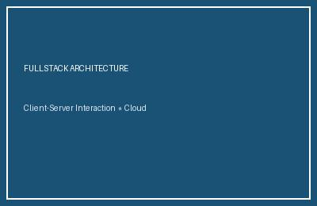

1. Що таке сучасне вебпрограмування?
Вебпрограмування — це галузь програмування, орієнтована на розробку динамічних інтерактивних веб-додатків та веб-сайтів. Воно охоплює весь життєвий цикл створення цифрового продукту: від проектування призначеного для користувача інтерфейсу до реалізації складної серверної бізнес-логіки та баз даних.
Примітка до лабораторної роботи: У даній роботі (Варіант 3) використано фонове зображення з повторенням repeat, напівпрозорі підкладки rgba(), тіні box-shadow, обтікання за допомогою float та оптимізацію іконок за допомогою CSS-спрайту.
2. Клієнтська частина (Frontend Development)

Frontend — це все те, що користувач бачить і з чим безпосередньо взаємодіє у вікні свого браузера. Основними фундаментальними технологіями фронтенду є тріада: HTML5 (семантична структура документа), CSS3 (візуальне оформлення, макети, анімації та адаптивність) і JavaScript (програмна поведінка, робота з DOM та асинхронні запити).
Сучасний фронтенд-розробник також використовує компонентні бібліотеки та фреймворки (React, Vue, Angular), інструменти збірки (Vite, Webpack) та препроцесори. Важливе місце посідає кросбраузерна верстка та доступність (a11y), що забезпечують коректне відображення сайту на смартфонах, планшетах і ПК.
Даний блок демонструє плаваючий елемент (властивість float: left) згідно з вимогами Варіанту 3: зображення притиснуте до лівого краю, а текст плавно обтікає його праворуч та знизу.
3. Серверна частина (Backend Development & Бази даних)

Backend — це серверна сторона веб-додатка, прихована від очей кінцевого користувача. Вона відповідає за обчислення, аутентифікацію, безпеку даних та взаємодію зі сховищами інформації.
Серверний код пишеться мовами програмування Python, Node.js (JavaScript/TypeScript), Java, PHP, C# або Go. Для зберігання даних застосовують реляційні бази даних (PostgreSQL, MySQL) або NoSQL-рішення (MongoDB, Redis). Зв'язок між клієнтом і сервером здійснюється за протоколами HTTP/HTTPS через архітектурні стилі REST API, GraphQL або WebSockets.
У цьому розділі застосовано плаваючий елемент з властивістю float: right: ілюстрація розташована праворуч, а текст гармонійно обтікає її з лівого боку.
4. Технологічний стек (Реалізація за допомогою CSS-спрайту)
CSS-спрайт (CSS Sprite) — це метод оптимізації веб-сторінок, коли кілька окремих графічних іконок об'єднуються в один спільний файл зображення (sprite.png). Завдяки цьому браузер робить лише один HTTP-запит до сервера замість десятків окремих, а потрібний фрагмент відображається зміщенням координат background-position.
HTML5
Скелет сторінки, семантичні теги та метадані.
background-position: 0 0;CSS3
Каскадні таблиці стилів, Flexbox, Grid, тіні та градієнти.
background-position: -40px 0;JavaScript
Динаміка, інтерактивність та робота з DOM.
background-position: -80px 0;Database & API
Серверні структури, збереження та захист інформації.
background-position: -120px 0;5. Fullstack-розробка та архітектура клієнт-сервер

Fullstack-інженер — це спеціаліст, здатний проектувати як клієнтську, так і серверну частину програми. Розуміння повного циклу передачі пакетів від форми на сторінці до запису в таблицю бази даних дає змогу будувати надійні, безпечні та масштабовані системи.
В умовах сучасного вебу критично важливими стали принципи оптимізації швидкодії, мінімізація кількості запитів (зокрема за рахунок спрайтів), кешування та адаптивний дизайн для всіх типів екранів.
Звіт про реалізацію вимог Варіанту 3
| № | Вимога за методичкою (Варіант 3) | Де реалізовано у коді | Статус |
|---|---|---|---|
| 1 | Плаваючі елементи (властивість float) |
Класи .float-image-left (секція 2, 5) та .float-image-right (секція 3) з клірингом .clearfix |
Виконано |
| 2 | CSS-спрайт | Секція 4: єдиний файл images/sprite.png з класами .sprite-html, .sprite-css, .sprite-js, .sprite-db |
Виконано |
| 3 | Тіні для обраних об’єктів (box-shadow) |
Тіні для блоків .content-card, кнопок .nav-btn, карток спрайтів .sprite-card та шапки .site-header |
Виконано |
| 4 | Фонове зображення з повторенням | Для тегу body: background-image: url('images/pattern.png') з background-repeat: repeat; |
Виконано |
| 5 | Прозорість для фону (напівпрозорий фон) | Властивість background-color: rgba(255, 255, 255, 0.94); для карток та rgba(26, 34, 51, 0.96); для шапки й підвалу |
Виконано |